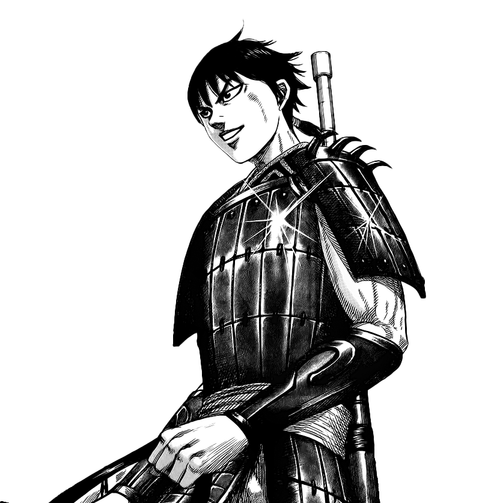
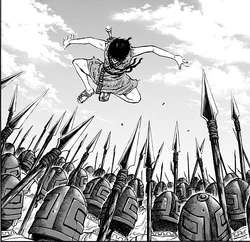
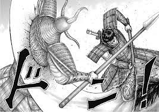
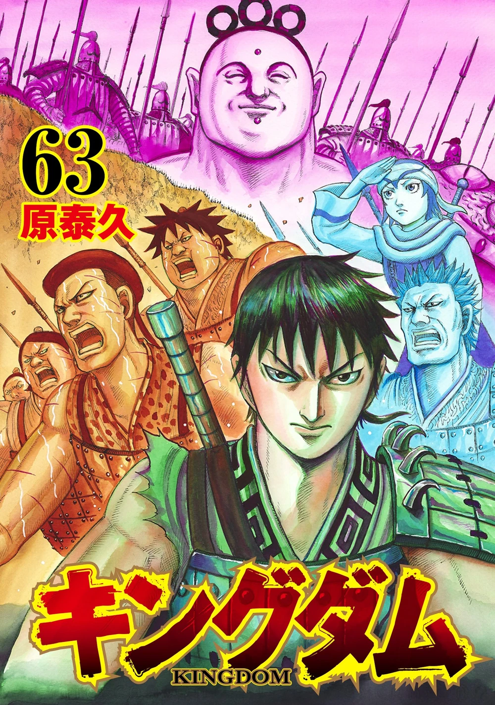
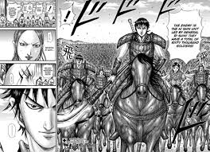

Characteristics Story Relationship Gallery
Ri Shin
Ri Shin, formerly known as Shin, is the main protagonist of Kingdom. He is the leader of the powerfully famous specialist army unit, the Hi Shin Unit, and a General of the Qin Military. He pursues the dream of becoming the Greatest General underneath the Heavens which was given  to him by his late adoptive/sworn brother Hyou as he inspired Shin to take up the sword and aim for the goal of one day going to the battlefield to become Great Generals, with him wanting to inch and have their names go down in history. Originally an orphan who was raised as a slave in Jouto, a small village in the state of Qin's countryside, Shin left the village after witnessing Hyou's death and met Ei Sei, the 31st king of the state of Qin and Ka Ryo Ten, a lookout for an outlaws village, as they became embroiled in the young  king's battle for his throne during his half brother's rebellion. As a military commander, Shin has fiercely participated in numerous campaigns and countless battlefields throughout the Warring States of Zhongyuan, having begun his career as a simple Infantry soldier fighting under the famous and late Duke Hyou in the Battle at Dakan Plains against the Wei Military and eventually clashing with others like the Zhao Military, the famed General Rin Ko of Ren Pa's Four  Heavenly Kings, the combined forces of the Coalition Army, the Ryo Fui Faction, and his militaristic rival and archenemy, Ri Boku and his cohorts in the form of powerful allies from both present and previous era of the War God. Despite his youth and relative inexperience, Shin has repeatedly clashed with formidable military opponents and secured victories across numerous battlefronts. Rising to the rank of 100-Man Commander after his first campaign, he distinguished himself by eliminating key figures in the Go Kei Army and played a crucial role  in the Keiyou Campaign. He later assisted Great General Ou Ki in the Battle of Bayou, facing off against the Three Great Heavens, and became a key figure in the successful invasion of Sanyou, where he directly contributed to Qin's victory over the legendary Ren Pa and his army. Under Duke Hyou, he fought in the Battle of Kankoku Pass, playing a vital role in key developments against the Zhao armies and personally slaying the sadistic Man Goku. Shin was later entrusted with the role of commander in the Battle of Sai, where he faced the Bushin Hou Ken, a foe he would ultimately defeat and kill on the final  day of the Battle at Shukai Plains years later. Shin has gained fame across the Warring States through his accomplishments, martial prowess, being one of the strongest combatants of his generation's military commanders, contributions to the Ei Sei Faction, and desire to Unify China as well as the focused hostility of Ri Boku in particular.